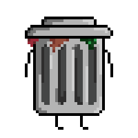

Java

Android Studio

SpringBoot

Docker

SQL

Json
EcoExplora
O Ecoexplora é um aplicativo que monitora animais extintos do Rio Grande do Sul, oferecendo informações sobre cada espécie e promovendo a conservação ambiental.


Html

Css

JavaScript
Json

Open Weather Api
Weather
Weather exibe a previsão do tempo em tempo real usando a API da OpenWeather. Basta digitar uma cidade para ver a temperatura e condições climáticas.

Html
Css
JavaScript
Trash Walker
Trash Walker é um jogo de corrida infinita onde o jogador desvia de obstáculos e coleta pontos. Além da diversão, ele conscientiza sobre sustentabilidade, destacando os impactos do lixo no meio ambiente e incentivando hábitos ecológicos.
Olá, sou Pedro, uso o nome Perdop nas redes sociais.
Comecei a estudar programação no Ensino Médio, formando-me em um curso técnico de desenvolvimento de software.
Desde o início, gostei de programar, e me interessei especialmente por responsividade e cross-plataforma enquento aprendia desenvolvimento web, algo que valorizo ainda em qualquer linguagem.
Depois disso, quis me aprofundar mais na área. Explorei diversas possibilidades no front-end e back-end, me identificando mais com este último. Atualmente, trabalho como freelancer e desenvolvo projetos pessoais, que posto atualizações nas midias e adiciono ao meu portfólio conforme o desenvolvimento.